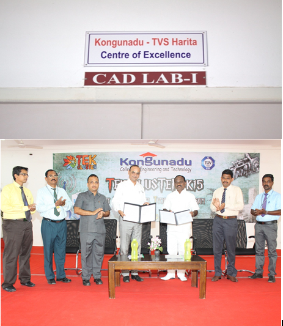

Namakkal-trichy state Highway, Tholurpattti Post, Thottiam Taluk Trichy District,TamilNadu 621215,India
(Approved by AICTE, New Delhi&Affillated to Anna University,Chennai,Accredited by NBA(CSE,ECE,EEE&MECH), Accredited by Naac, Recognized by UCC with 2(f)&12(B) and ISO 9001:2015 certified Institution)
close
Kongunadu-TVS Harita Centre Of Excellence

Department of Mechanical Engineering has established a TVS HARITA Centre of Excellence in association with Academic related activities in order to create students as skilled workforce to meet current in emerging market needs.
Objective:
• To promote research activities
• To develop entrepreneurship skill
• To facilitate consultancy/funded projects
• To develop commercial products
• To strengthen industry institute interaction
• To provide platform to the students to interact with industry experts
Aim and Scope
To enhance the industry readiness and employability, the Mechanical Engineering Department has signed MoU with core industries and also collaborated Centre of Excellence with TVS-Harita Techserv. The Memorandum of Understanding between Kongunadu College of Engineering and Technology (KNCET) and M/S Harita Techserv Ltd, Chennai was signed on 14.08.2015 to provide Industry oriented software training to the students and faculty members.
The main aim of signing MoU is to establish KNCET- TVS Harita research centre for new product development and digital manufacturing technology with the required infrastructure, workstations and the recommended software to enable the faculty members and students researchers to learn and conduct research activities on the latest technologies. Harita Techserv Training experts are giving intensive training and certified eight faculty members from the Department of Mechanical Engineering in the respective software.
The following Industrial softwares are provided by TVS HARITA :
1. CATIA V5
2. DELMIA V5 EDU 12
3. 3D VIA Technical Documentation
Benefits
• Reduce the Communication and Technological gap between Industry and Institution.
• Faculty Members & Students gets exposure in real time working environment.
• Industry experts train the students to get industry oriented practical research exposure.
• Harita Techserv experts periodically visit and monitor the faculty members, research designs, skill development, engineering research activities and performances. They also evaluate the students learning progression and give additional inputs, if required.
• Live projects, products, design and research activities are executed by the research faculty and student researchers through the support of Harita Techserv.
• Harita Techserv conducts ‘Campus Placement Drive’, after the training provided to the students researchers during the final semester.